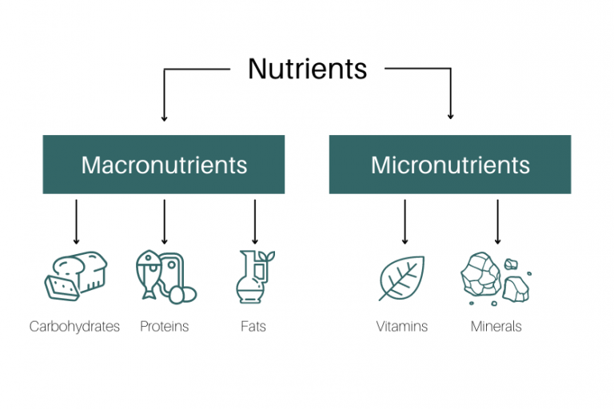

There are various types of nutients, but they can be divided into two categories: Micro and Macro Nutrients
Macronutrients (carbs, proteins, fats, and water) give energy and structure, while micronutrients (vitamins and minerals) keep the body functioning and healthy.
Carbs:
Carbohydrates – These are the body’s main and quickest source of energy. They break down into glucose, which fuels your brain, muscles, and organs. Complex carbs (like whole grains, fruits, and vegetables) provide longer-lasting energy, while simple carbs (like sugar and candy) give quick energy but don’t keep you full for long.
Proteins:
Proteins – Proteins are essential for building and repairing body tissues, muscles, skin, and enzymes. They also help make hormones and antibodies that support your immune system. Good sources include meat, fish, eggs, beans, nuts, and dairy products.
Vitamins
Vitamins – Vitamins regulate many body processes, such as growth, immunity, and metabolism. Each vitamin has a different role — for example, vitamin C helps heal wounds, vitamin D supports bone health, and vitamin A supports vision. They are found in fruits, vegetables, dairy, and whole grains.
Minerals:
Minerals – Minerals help the body function properly. Calcium strengthens bones and teeth, iron carries oxygen in the blood, and potassium helps control heart and muscle function. You can get minerals from foods like dairy, meat, leafy greens, and nuts.
Carbohydrates – These are the body’s main and quickest source of energy. They break down into glucose, which fuels your brain, muscles, and organs. Complex carbs (like whole grains, fruits, and vegetables) provide longer-lasting energy, while simple carbs (like sugar and candy) give quick energy but don’t keep you full for long.
Fiber: A type of carbohydrate the body can’t digest. It helps digestive health, keeps you full longer, and regulates blood sugar and cholesterol. Found in whole grains, fruits, vegetables, and beans.